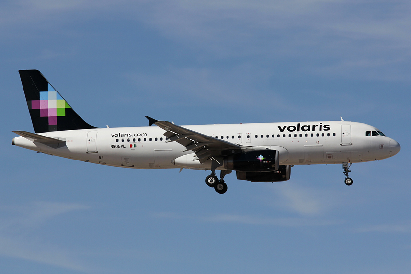

Volai | Agrolašmuo Volai skirti suspausti paviršinį dirvos sluoksnį mažame gylyje, pagrinde sėjant javus, kukurūzus ir burokus. Volų naudojimas yra labai svarbus agrotechninis veiksmas nuo kurio ženkliai priklauso apdirbamų laukų kokybė. Nauda kurią duoda...
Volai - UAB Margučiai Naudota žemės ūkio technika, padargai - volai. Detalesnė informacija ir nuotraukų galerija internetinėje svetainėje agrolasmuo.lt Susisiekite.
Volai žemės ūkio technika - Skelbiu.lt Jūsų žemės ūkiui AB LYTAGRA siūlo AMAZONE dirvos ruošimo techniką. Skutikliai, kultivatoriai ir volai Jūsų ūkio dirvos ruošimui, visiems Jūsų ūkio poreikiams.
volai skelbimai - Skelbiu.lt Masažiniai volai sportui, siekiantiems sveiko ir gražaus kūno . Kokybiški ir patvarūs masažiniai voleliai internetu, parduodami žema kaina - pigiai .
Volai nuoma | Storent UAB Universalūs volai skirti tiek asfaltui tiesti, tiek ir gruntui sutankinti. Katalogas . 01 - Žemės darbų technika; 02 - Teleskopiniai ir šakiniai krautuvai
Volai. | Reabilitacijai, slaugai, sportui. Neįgaliųjų ... Masažiniai volai bus nepamainomas įrankis raumenų masažui, tempimui, taip pat ir norint stimuliuoti akupunktūrinius taškus. Šis volas kūną atpalaiduoja palaipsniui, efektyviai mažina įtampą. Masažinio volo panaudojimo galimybės plačios: giliųjų audinių masažui, taip pat atpalaidavimui, jogai, pilatesui, stabilizavimo ...
Volai, Žemės ūkio padargai | Autoplius.lt Jūs esate čia Sportui namuose - Volai.. Apie mus. Teida – daugiau nei 25 metus dirbanti kompanija, teikianti klientams kokybiškus ir modernius reabilitacijos, slaugos, sporto ir sveikatingumo gaminius, taip pat neįgaliesiems skirtą techniką.
Rexius ir Rollex - volai, didinantys jūsų derlių Rekvizitai UAB Margučiai Įmonės kodas: 301400534 PVM kodas: LT100003668814 Margučių g. 3, Margučių k., Miežiškių sen., Panevėžio raj., LT-38100
2020.10.29 05:06

Menu Pagrindinis Apie mus Apie įmonę Pagerbti rajono verslininkai NMA Parama 2020 m. Privatumo politika El. parduotuvės sąlygos Purkštuvų tech. reikalavimai Purškimo įrangos taisyklės Palyginti (0) Partneriai Vieninteliai Lietuvoje atstovaujame Taip pat prekiaujame Partneriai Galerija Video Nuotraukų Kontaktai My Cart (0) Prisijungti prie savo paskyros info@marguciai.lt | Kalba Lietuvių English Русский | | | | Prisijungti
Mūsų svetainėje naudojami slapukai (angl. cookies). Jeigu sutinkate su slapukų naudojimu, paspauskite „sutinku” ir toliau tęskite naršymą.
Sutinku Daugiau informacijos Nauja technika +370 685 54521 +370 685 54521 Naudota technika +370 656 24532 +370 656 24532 Atsarginės dalys +370 615 68799 +370 615 68799 shopping_cart My Cart 0,00 EUR 0 NAUJI TRAKTORIAI Traktoriai FARMTRAC Traktoriai SOLIS Traktoriai DONG FENG Traktoriai ZOOMLION NAUJA TECHNIKA Žemės dirbimo technika Sėjamosios Daržininkystės technika Sodininkystės technika Tręšimo ir chemikalų purškimo technika Šienavimo, pašarų ruošimo technika Grūdų apdorojimo technika Krautuvai Priekabos, puspriekabės Komunalinė, miško technika Priedai keturračiams Priedai mini traktoriukams Kuro talpyklos Įvairūs NAUDOTA TECHNIKA IŠ LENKIJOS NAUDOTA TECHNIKA IŠ SKANDINAVIJOS Žemės dirbimo technika Sėjamosios Tręšimo ir chemikalų purškimo technika Šienavimo, pašarų ruošimo technika Javų, daržovių kombainai Traktoriai, ekskavatoriai, vejapjovės Priekabos, puspriekabės Komunalinė, miško technika Įvairūs Technika pagal užsakymą Specialus pasiūlymas FERMŲ ĮRANGA Pertvaros gardams, kombiboksai Grotos šėrimui Pertvaros, varteliai Nameliai, aptvarai, lauko sistemos Veterinariniai, sutramdymo ir kiti gardai Girdyklos, šėryklos Kilimėliai, grotos Ventiliacinės sistemos, užuolaidos fermoms Šepečiai Melžimo agregatai Įvairūs PASLAUGOS Prašymas atlikti purkštuvų techninę apžiūrą Chemikalų purkštuvų techninė apžiūra Servisas Luminor banko pasiūlymas klientams KREDA jungtinių kredito unijų pasiūlymas klientams Atsarginės dalys Žemės dirbimo technika Sėjamosios Daržininkystės technika Tręšimo ir chemikalų purškimo technika Šienavimo, pašarų ruošimo technika Grūdų apdorojimo technika Krautuvai Priekabos, puspriekabės Komunalinė, miško technika Kardaniniai velenai Įvairūs Fermų įranga Pagrindinis Naudota technika iš Skandinavijos Žemės dirbimo technika Volai
Kategorijos
Volai be važiuoklės Volai su važiuokle Priekiniai volai Volai plūgams GERAI
Filtruoti pagal
Išvalyti viską
Volai
Volai be važiuoklės
Volai su važiuokle
Priekiniai volai
Volai plūgams
Rodomi 11 produktai. Rikiuoti pagal: Pasirinkti Aktualumas Pavadinimas, A - Z Pavadinimas, Z - A Kaina, mažiausia - didžiausia Kaina, didžiausia - mažiausia Filtras Rodomi 1-11 iš 11 produktai
Crosskill tipo žiedai volams
Išparduota 50 EUR Išparduota Palyginti
Žiedai grumstų smulkinimo volui / pakomatui Kverneland
Išparduota 50 EUR Išparduota Palyginti
Ratinis volas Scan Farm SP150 , 1,35 m.
Išparduota 750 EUR Išparduota Palyginti
Grumstų smulkinimo volas 1,3 m.
Išparduota 300 EUR Išparduota Palyginti
Volai Akpil , 6 m.
Išparduota 700 EUR Išparduota Palyginti
Kembridžo tipo prikabinami volai Dal-Bo Minimax , 8,3 m.
Išparduota 11500 EUR Išparduota Palyginti
Priekinis crosskill volas Dal-Bo Levelflex , 3 m.
Išparduota 2500 EUR Išparduota Palyginti
Grumstų smulkinimo volas Dal-Bo , 1,9 m.
Išparduota 800 EUR Išparduota Palyginti
Grumstų smulkinimo volas Dal-Bo , 2 m.
Išparduota 400 EUR Išparduota Palyginti
Grumstų smulkinimo volas / pakomatas Kverneland , 2,5 m.
Išparduota 2500 EUR Išparduota Palyginti
Grumstų smulkinimo volas / pakomatas Kverneland , 1,8 m.
Išparduota 1200 EUR Išparduota Palyginti info@marguciai.lt buhalterija@marguciai.lt
Rekvizitai
UAB Margučiai Įmonės kodas: 301400534 PVM kodas: LT100003668814 Margučių g. 3, Margučių k., Miežiškių sen., Panevėžio raj., LT-38100
A/S LT02 4010 0412 0045 7699 Luminor bankas Banko kodas: 40100 Swift kodas: AGBLLT2X